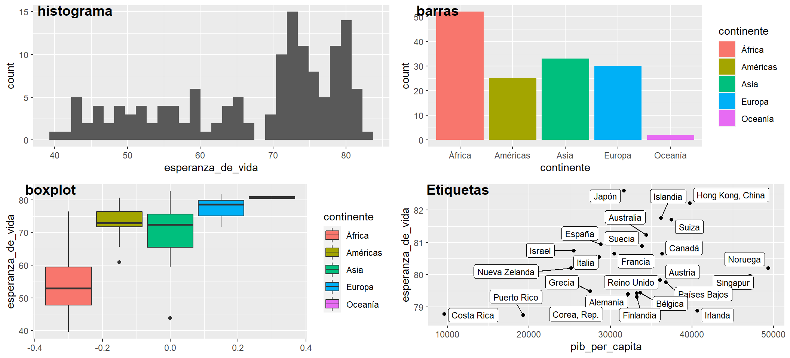

Capítol 6 Gráficos con ggplot2
Un simple gráfico ha brindado más información a la mente del analista de datos que cualquier otro dispositivo. - John Tukey
6.1 Estructura básica de ggplot2
ggplot2 es un sistema coherente para hacer gráficos.
suppressPackageStartupMessages(library(tidyverse))
data(galton)
ggplot(data= galton, mapping = aes(x=parent, y= child)) +
geom_point()Figura 6.1: Altura padres e hijos (Galton, 1885)
La altura de los padres es la media entre la altura del padre y 1.08 veces la de la madre. En los datos hay 205 padres diferentes y 928 hijos. Los datos fueron tabulados y por lo tanto discretizado.
Para visualizar los datos resulta útil introducir aleatoridad con jitter.
data(galton)
ggplot(data= galton, mapping = aes(x=parent, y= child)) +
geom_jitter()Figura 6.2: Jitter altura padres e hijos (Galton, 1885)
Los componentes mínimos son:
ggplotdefine el conjunto de datos en el parámetrodataque debería contener todas las variables del gráfico.geom_<función>: Define el tipo de gráfico. Por ejemplo, geom_point es un gráfico de puntos.mapping: define mapeo de parámetros estéticos (x,y…) a través de la funciónaes().
A diferencia de plot, ggplot permite asignar el gráfico a un objeto R.
p1 <- ggplot(data= galton, mapping = aes(x=parent, y= child)) +
geom_jitter()Posteriormente, puedes añadirle otros elementos gráficos.
p1 <- p1 +
geom_smooth(method='lm', se=FALSE, formula = y~x, aes(color = "lm")) +
geom_abline(aes(intercept = 0, slope = 1, color = "Diagonal y = x")) +
labs(title = "Relación altura padres e hijos (Galton, 1885)"
,x = "Media altura padres (pulgadas)", y = "Altura hijos (pulgadas)")
p1Figura 6.3: Regresion Simple y recta diagonal altura padres e hijos (Galton, 1885)
Si defines el mapeo de estéticos en
ggplotya no es necesario definirlos en los geoms.
Otros geoms
Otros ejemplos de geoms con los datos de países en 2007.
library(ggrepel)
library(datos)
paises07 <- as.data.frame(paises %>% filter(anio==2007)) # paises en 2007
p1 <- ggplot(paises07, aes(x=esperanza_de_vida)) +
geom_histogram()
p2 <- ggplot(paises07, aes(x=continente, fill=continente)) +
geom_bar()
p3 <- ggplot(paises07, aes(y=esperanza_de_vida, fill=continente)) +
geom_boxplot()
p4 <- ggplot(paises07 %>% arrange(desc(esperanza_de_vida)) %>% head(25),
aes(x=pib_per_capita, y=esperanza_de_vida)) +
geom_point() +
geom_label_repel(aes(label=pais), size=3)
Otros elmentos gráficos
Otros elementos a tener en cuenta en la presentación:
- Permite crear un panel de gráficos utilizando variables de segmentación:
facet_wrap()yfacet_grid() - Insertar etiquetas y anotaciones de texto: consulta la función
annotate(),geom_text(),geom_label(),geom_label_repel(). - Escalas: Permite cambiar los valores de los ejes. Por ejemplo, consulta
scale_x_continuous()yscale_x_log10(). - Colores: Para cambiar las paletas de colores consulta
scale_colour_discrete(),scale_colour_brewer(),scale_colour_manual(),scale_fill_viridis(),scale_colour_gradient()… - Zoom: Importante, para realizar zoom utiliza xlim e ylim en:
coord_cartesian(). - Temas: Personaliza posición de la leyenda y resto de elementos gráficos, tamaños colores, fuente… Consulta:
theme()ytheme_bw(). - Interactivos: packages gganimate y plotly.
Para ampliar la lectura consulta:
- R for Data Science from Garrett Grolemund and Hadley Wickham.
- ggplot2: Elegant Graphics for Data Analysis de Hadley Wickham.
- ggplot2 extensions guide lista los paquetes que extienden
ggplot2. - La {ggplot2} cheat sheet.
Actividad guiada 1.3.
Vamos a mejorar de nuevo el informe de los países introduciendo:
- Haz un panel de boxplot por año del PIB per cápita (escala log10) y la esperanza de vida.
- Mejora el gráfico de dispersión de países:
- Recodifica Oceanía como Asia y Modifica los colores de los continentes.
- Utiliza los siguiente paleta de colores:
- “blue”: “África”
- “green”: “Américas”
- “red”: “Asia”
- “yellow”: “Europa”
- Inserta Etiquetas para España, China, Etiopía y Canadá.
Observa:
- Se han añadido parámetros estéticos:
colorysize. - La escala del eje x (pib_per_capita) se ha transformado a escala logarítmica con
scale_x_log10(). - Se ha definido un panel temporal con
facet_wrap() - Hay que imprimir el gráfico con
print() - Se ha recodificado una variable factor.
- Se ha parametrizado los colores de los continentes y las etiquetas de los países.
- La función
describir()devuelve una lista de resultados (plots y tablas). - Se han introducido boxplots.
- Se ha construido un data frame con los países con etiqueta.
- Se ha seleccionado las variables a presentar en el summary.
Puedes ver la solución en 6.2 .
Hans Rosling de Gapminder utilizó un gráfico muy parecido a éste, añadiendo un quinto eje (el tiempo) en una famosa conferencia TED Talk (14,6M de visualizaciones). Dedícale 1 minuto a ver la simulación dándole al botón de play (abajo izquierda), en el siguiente enlace. La herramienta utilizada Trendalyzer fue posteriormente adquirida por Google.
6.2 Actividad guiada 1.3
---
title: "Actividad 1.3"
output: html_document
---library(knitr)
library(datos)
suppressPackageStartupMessages(library(tidyverse))
knitr::opts_chunk$set(echo = TRUE)Gráfico de dispersión de países
p1 <- ggplot(paises, aes(x=pib_per_capita, y=esperanza_de_vida
, color=continente, size=poblacion)) +
geom_point() +
scale_x_log10() +
labs(title="Panel de países del 1952 al 2007"
, x = "Logaritmo base 10 del PIB per cápita ($ americanos, ajustados según inflación)"
, y = "Esperanza de vida (años)") +
facet_wrap(~anio)
print(p1)Figura 6.4: Panel países (Fuente: Elaboración propia con datos de Gapminder)
Se observa una clara relación entre tener un mayor PIB per cápita (logaritmo base 10) y la esperanza de vida media de los países.
Se observa como África ha tenido históricamente menor PIB y menor esperanza de vida. Se observa Asia y América en su conjunto, han aumentado en PIB y esperanza de vida.
6.2.1 Preparación de datos
library(ggrepel)
paises_informe <- paises
# Recodifica Oceanía por Asia
paises_informe$continente[paises_informe$continente=="Oceanía"] <- "Asia"
# Elimina Oceanía de los levels
paises_informe$continente <- factor(paises_informe$continente)
# Paleta de colores
colores_continente <- c("blue","green", "red", "yellow")
names(colores_continente) <- c("África", "Américas", "Asia", "Europa")
# Etiquetas
etiquetas_paises <- c("España","China","Etiopía","Canadá")
# funcion describir
describir <- function(data, colores, etiquetas) {
# filtra paises con etiqueta
data_etiquetas <- data[data$pais %in% etiquetas, ]
resultados <- list()
resultados[["pib_per_capita"]] <-
ggplot(data, aes(x=anio, y=pib_per_capita, group=anio)) +
geom_boxplot()+
scale_y_log10()
resultados[["esperanza_de_vida"]] <-
ggplot(data, aes(x=anio, y=esperanza_de_vida, group=anio)) +
geom_boxplot()
resultados[["dispersion"]] <- ggplot(data, aes(x=pib_per_capita, y=esperanza_de_vida
, color=continente, size=poblacion)) +
geom_point() +
scale_x_log10() +
scale_colour_manual(values = colores) +
geom_label(data=data_etiquetas
, mapping=aes(x=pib_per_capita, y=esperanza_de_vida, label=pais)
, size=3, color="black") +
labs(title="Panel de países del 1952 al 2007"
, x = "Logaritmo base 10 del PIB per cápita ($ americanos, ajustados según inflación)"
, y = "Esperanza de vida (años)") +
facet_wrap(~anio)
resultados[["summary"]] <- summary(data[,c("anio","continente","esperanza_de_vida","pib_per_capita")])
return(resultados)
}
resumen <- describir(paises_informe, colores_continente, etiquetas_paises)6.2.2 Descriptivo boxplot
Figura 6.5: Boxplot PIB per càpita (Continente y año) - Escala Log10
Se observa como los valores del boxplot aumentan, es decir, el PIB cada vez es mayor. Aunque parece que el tamaño de las cajas (difernecia entre 1r y 3r cuantil), cada vez son mas anchas.
Figura 6.6: Boxplot Esperanza de vida (Continente y año)
A su vez, la esperanza de vida también aumenta. El eje central de la caja (la mediana) cada vez se sitúa más en al parte superior de la caja (cerca del 3r cuantil).
6.2.3 Gráfico de dispersión de países
Figura 6.7: Panel países (Fuente: Elaboración propia con datos de Gapminder)
Vemos como España y Canadá siempre han estado en la parte superior y Etiopía en la parte inferior en PIB per cápita y esperanza de vida. En cambio, China ha evolucionado positivamente en estos dos aspectos, pasando de la parte inferior a la parte superior de la nube de países.